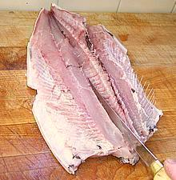

#2 Cleaned bangus
#3 Fin removed

#5 Cutting ribs

#6 Filleting
#7 Pulling ribs
#8 Centerline pin bones
#10-1 Opening seam
#10-2 Pulling pin bones
#10-4 Lower seam
#10-5 Done
Method #2
#11-1 Cut across
#11-3 Done
Pin Bones:
For people not accustomed to eating Carp, Bangus has a major problem - the flesh is shot through with about 180 thread-like pin bones. These are part of the fish's sensory system, allowing it to detect tiny changes in the water column. Fortunately, the pin bones are in bundles so you don't have to deal with each one individually. Unlike the Bangus' distant relative, the Carp, these pin bones can be removed before cooking.Method:
Here's the procedure for boneless bangus fillets: It may look like an awful lot of trouble but it really isn't that bad, especially after you've done a couple. Be sure to select a large bangus because a smaller one is just as much trouble for less fish.You will need, besides your cutting board and kitchen prep knife, a filleting knife, kitchen shears and a small pair of long nose pliers. A larger pair will not give you the sensitivity you need.
- First scale the fish. Bangus is completely covered with shiny silver scales which adhere well and will take a bit of energy to scrape off (some recipes fry the skin side crisp with the scales on).
- Clean the fish the usual way - bangus has a very long body cavity similar to a trout. After you've removed the innards and gills you'll find there's a gelatinous deposit of belly fat between the black cavity lining and the abdominal wall. Whether you retain this or scrape it off depends on your recipe and intent. See our Milkfish page for details.
- Cut out the dorsal fin by slicing in deeply along both sides.
- Make the usual cuts around the collar in front and use kitchen shears to cut the backbone to remove the head. Cut off the tail and toss both head and tail into the stock pot.
- Cutting from the bottom side of the fish with your filleting knife, make filleting cuts from the back end of the cavity to the tail. You should now be able to open the fish down to the backbone as shown. With your kitchen shears cut the ribs away from the backbone.
- With your filleting knife continue to cut down from the backbone right through the tail end of the fish. You should now be able to remove the backbone and have the fish in two neat halves. Toss the backbone into the stock pot.
- Remove the ribs. They are easy to find and very easy to remove with long nose pliers - the least troublesome small bones in this fish.
- Now hold the fillet with your fingers on the center of the skin side at the front to help expose the tiny pin bones you'll feel sticking up along the centerline for the first couple of inches. Pull them out (straight forward) with long nose pliers.
- Carefully feel along the cuts where both the head and tail were cut off and you will feel spine ends. Pull those pin bones out with long nose pliers.
Method #1
- Now you are ready to remove all those embedded pin bones. This is the method I have the best success with and it leaves a pretty good looking fillet:- Looking at your fish halves you'll notice a faint seam in the flesh about 1/3 in from the top edge. Gently open this seam with your fingers or filleting knife, prying apart rather than cutting. Be careful not to cut through the pin bones deep down in the flesh, nearer the skin than the surface.
- Now you will be able to feel the pin bone bundles all along the bottom of the separation - they're actually easier to feel with the pliers than with your fingers. Take your pliers and pull each one, holding down the flesh on both sides with your fingers to minimize tearing.
- Feel all along the bottom of the separation to make sure you didn't miss any pin bone bundles, and check the end cuts one more time.
- Now find the similar seam below the centerline and pry it open as you did the one above. Remove the pin bones just as along the upper seam - but there are a lot fewer of them, they're thinner, and that seam runs only from the tail to the body cavity.
Method #2
- I understand this is the method used to remove the pin bones in Philippine fish factories so it's probably faster for an experienced operator.- Gently make cuts across the flesh above the centerline, being careful not to cut the pin bone bundles which are about 2/3 through the flesh. Should you cut through the pin bones you will still be able to pull them because you can feel the ends on both sides of the cut - but it'll be a lot more trouble. Pros use 4 cuts but I use 5 because I'm not as expert.
- Pull each spine bundle from the flesh on each side of the cut, holding the flesh in place with your fingers to minimize tearing. Don't forget that aft of the body cavity there will be pin bones below the centerline too.
- Carefully feel both walls and the bottom in all the cuts for any evidence of remaining pin bones.
- Now, for whichever method you used, cut off the last inch at the tail end, it's still full of pin bones whether you think it is or not, and feel the freshly cut surface for evidence of pin bones you still need to pull.
- Check the cut surface at the head end one more time, this is the most likely place for pin bones to escape your notice.
- By either method you should now have two sides of bangus, boneless, without pin bones, and recipe ready.